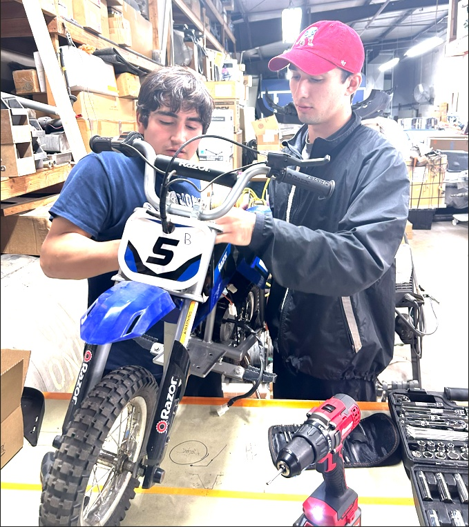
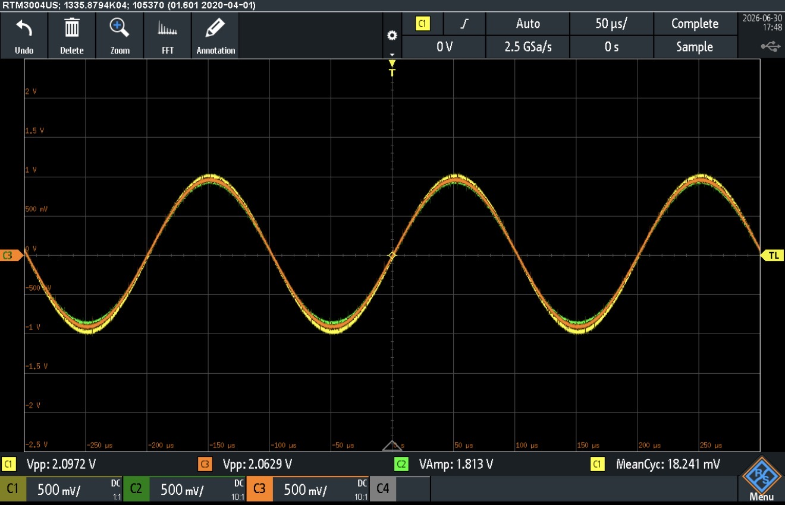
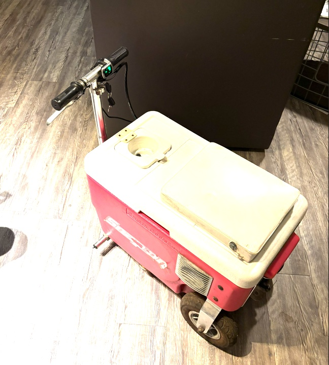
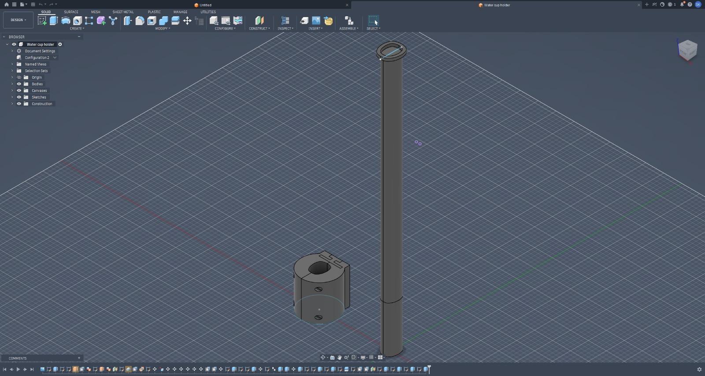
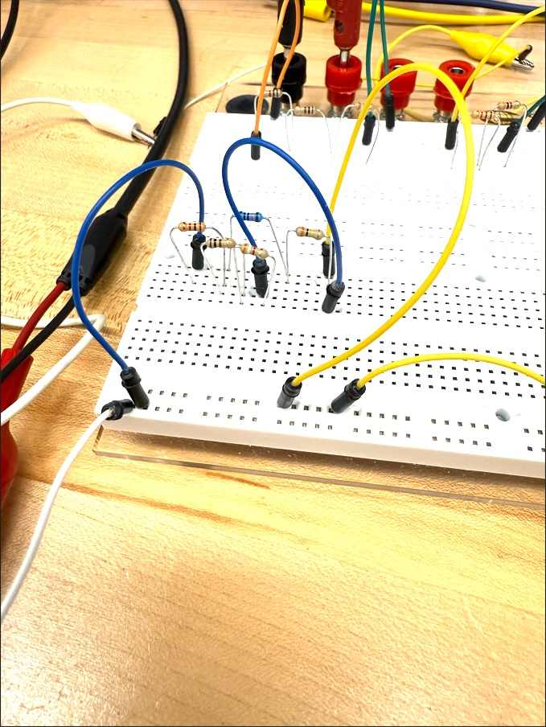

Embedded Systems
ESP32-S3 development, Arduino C++, I²C sensors, serial diagnostics, GPIO planning, and firmware testing.
Electrical Engineering Student | University of Central Florida
Building practical embedded, power, and hardware systems from first schematic through testing and documentation.
My interests include embedded systems, power systems, smart grids, energy efficiency, circuit analysis, and hands-on hardware development.
This portfolio documents verified project work, academic labs, engineering tools, and the design decisions behind each build.



Quick Skills Snapshot
Each area below connects to a build, simulation, lab, or documented test.
ESP32-S3 development, Arduino C++, I²C sensors, serial diagnostics, GPIO planning, and firmware testing.
PowerWorld Simulator, LTspice, power delivery, MOSFET switching, inductive-load protection, and circuit analysis.
Autodesk Fusion, 3D printed brackets, fit checks, design iteration, and prototype documentation.
C++, MIPS and ARM assembly tools, breadboard circuits, oscilloscope measurements, and technical reports.
Engineering Calculators
A growing calculator hub for electrical engineering formulas, project planning, and common student calculations.
New Resource Hub
Use the first working calculators for Ohm's Law, voltage dividers, LED resistors, and RC time constants. More tools can be added over time as searchable calculator pages.
Open CalculatorsFeatured Projects
Start with the current ESP32 system, then explore completed mobility builds, design work, and academic electronics.

Embedded Systems
In ProgressESP32-S3 firmware, verified BME280 sensing, serial diagnostics, and a simulated protected 12 V fan driver.
Featured Build
48V lithium battery, 2000W BLDC motor, controller wiring, throttle setup, and real-world testing.
View Case Study
Mobility Build
Small-vehicle packaging, mounting, wiring cleanup, ride testing, and build iteration.
View Case Study
Design Work
Fusion 360 modeling, prototype parts, fit checks, 3D printed mounts, and revision notes.
View Case Study
Academic Work
Circuit measurements, simulation notes, technical reports, and electronics lab documentation.
View Case StudyInternships / Engineering Opportunities
I am interested in roles where embedded hardware, power systems, practical troubleshooting, prototyping, and clear documentation matter.